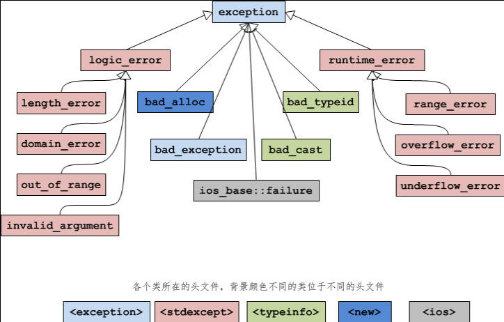

C++ std::exception
C++ 语言本身或者标准库抛出的异常都是 exception 的子类，称为标准异常（Standard Exception）。可以通过下面的语句来捕获所有的标准异常：
1 | |
一、简介
std::exception：标准异常类的基类，其类的声明在头文件 <exception> 中。所有标准库的异常类均继承于此类，因此通过引用类型可以捕获所有标准异常。
std::exception 类定义了无参构造函数、拷贝构造函数、拷贝赋值运算符、一个虚析构函数和一个名为 what 的无参虚成员。其中 what 函数返回一个 const char*，该指针指向一个以 null 结尾的字符数组，并且确保不会抛出任何异常，该字符串的目的是提供关于异常的一些文本信息。除析构函数外，其它函数均通过关键字 noexcept 说明此函数不会抛出异常。
1 | |
二、标准异常类
C++ 标准库提供了多个派生自 std::exception 的异常类，如 std::runtime_error、std::logic_error 等，用于表示常见的异常情况。
| exception | 异常类基类 |
|---|---|
| runtime_error | 只有在运行时才能检测出的问题 |
| range_error | 运行时错误：生成的结构超出了有意义的值域范围 |
| overflow_error | 运行时错误：计算上溢 |
| underflow_error | 运行时错误：计算下溢 |
| logic_error | 程序逻辑错误 |
| domain_error | 逻辑错误：无效参数 |
| invalid_argument | 逻辑错误：无效参数 |
| length_error | 逻辑错误：试图创建一个超出该类型最大长度的对象 |
| out_of_range_error | 逻辑错误：使用一个超出有效范围的对象 |
| bad_alloc | 内存分配失败 |
| bad_cast | 使用 dynamic_cast 转换失败时抛出的异常 |
| bad_typeid | 使用 typeid 操作一个 NULL 指针，而且该指针是带有虚函数的类，这时抛出 bad_typeid 异常 |
| bad_exception | 如果函数的异常列表里声明了 bad_exception 异常，当函数内部抛出了异常列表中没有的异常时，如果调用的 unexpected() 函数中抛出了异常，不论什么类型，都会被替换为 bad_exception 类型 |
| ios_base::failure | io 过程中出现的异常 |

例一：
1 | |
例二：
1 | |
注意：
- 异常不应该用于正常的控制流，它们应该只用于处理异常情况
- 异常处理可能会影响程序的性能，因此应该谨慎使用
- 确保在
catch块中处理所有可能的异常类型，以避免程序在未处理的异常中崩溃
C++ std::exception
http://example.com/2026/05/16/C++-std-exception/